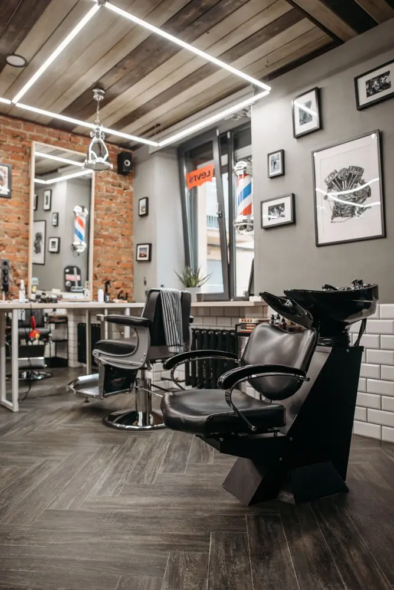
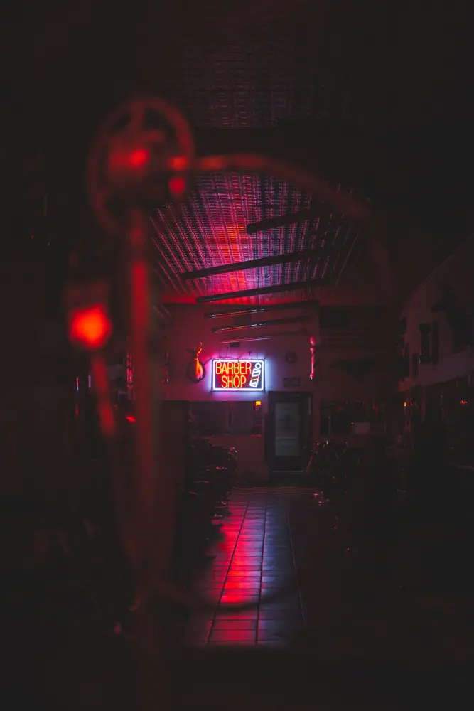

Our story
Thirty years on Bridge Street
Oakmoss opened with two chairs and one rule: every client leaves looking sharp and feeling better than when he walked in. Today there are five chairs, three barbers and the same old espresso machine.
We do classic scissor cuts, modern fades, beard sculpting and the traditional hot towel shave with a straight razor, finished with our own oakmoss aftershave balm.
- 30 years
- 5 chairs
- 4.9 ★ 1,200 reviews

